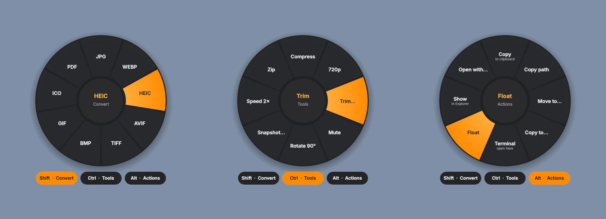
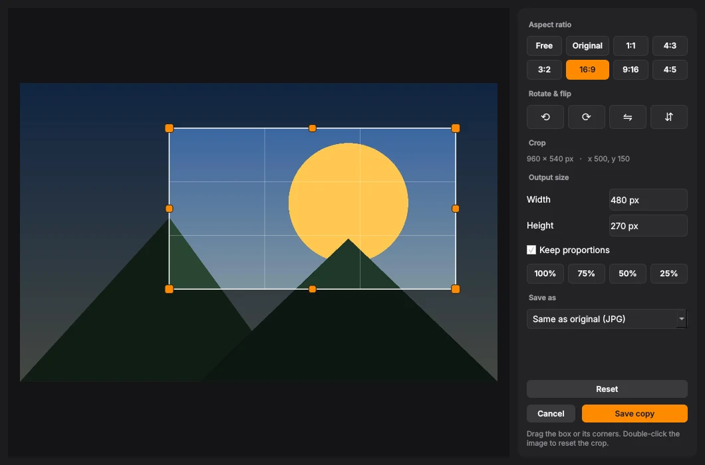
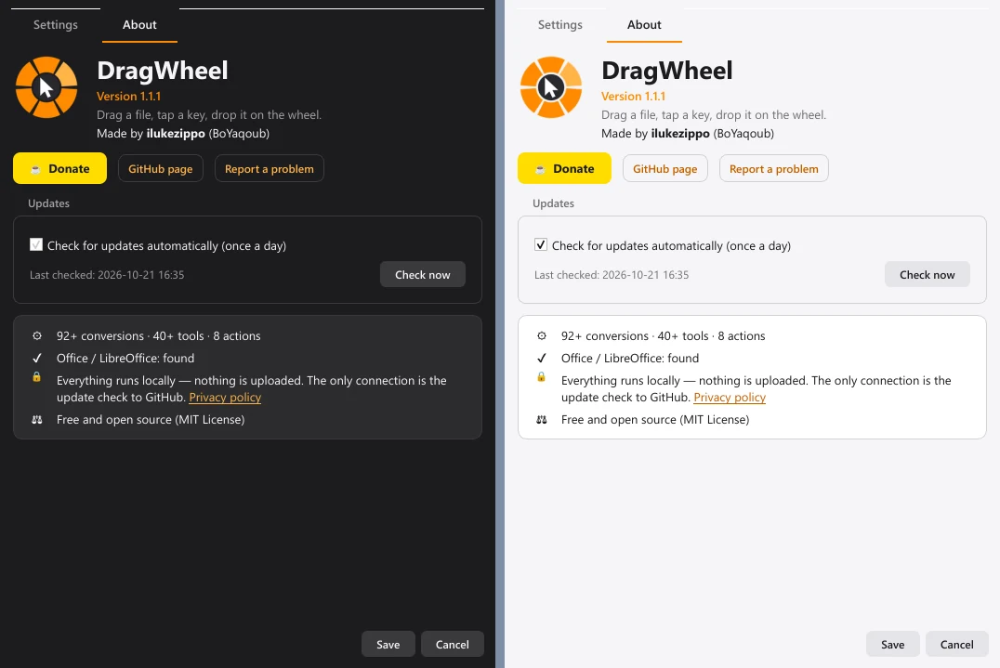
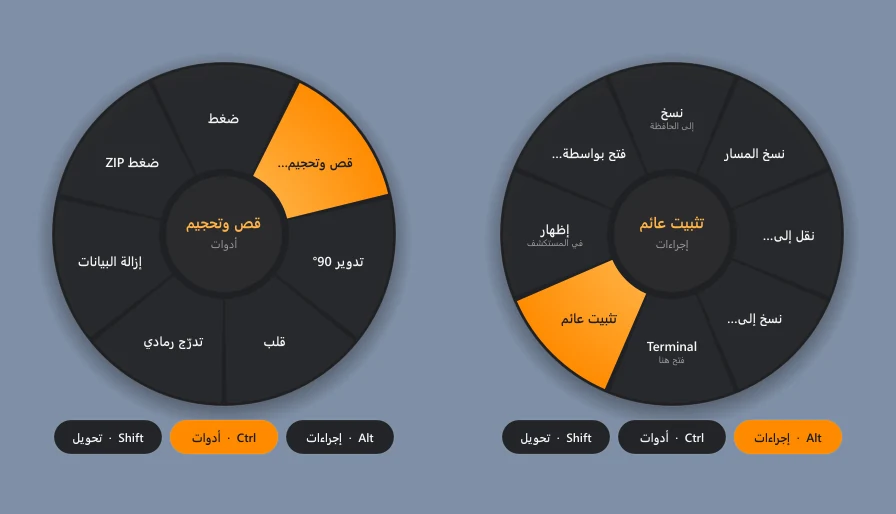
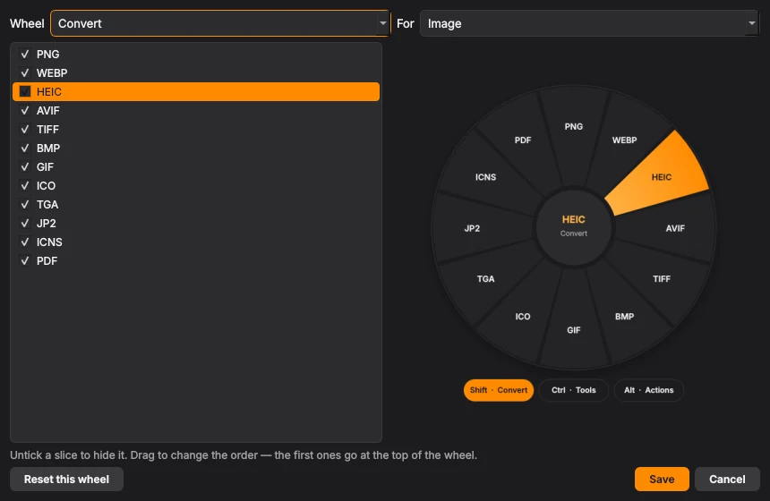
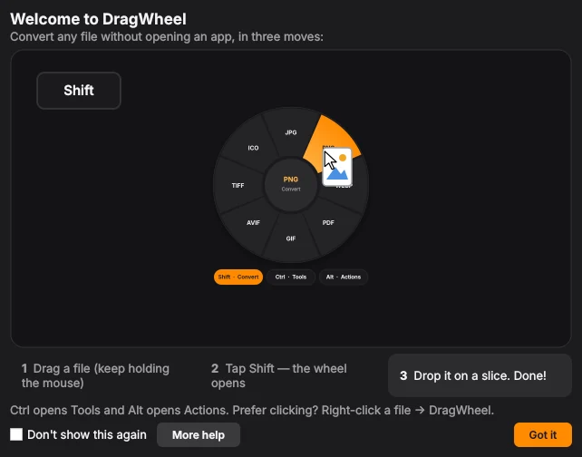

How it works
DragWheel sits in the system tray. You keep dragging files the way you already do; the wheel only shows up when you ask for it.
Drag a file
Pick up any file or folder in File Explorer or on the desktop, and keep holding the mouse button.
Tap a key
Shift opens Convert, Ctrl opens Tools, Alt opens Actions. Scrolling the mouse wheel works too.
Drop it on a slice
The result is saved next to the original. Drop in the middle to cancel; the original is never changed.
Not dragging? Select files and press Ctrl + Alt + Space, or right-click and choose DragWheel.
Three wheels, one gesture
Each wheel only shows what makes sense for the file you're holding, in a single ring.




New in 1.2
The biggest update yet: PDF signing, a mini player for YouTube links, sending files to your phone, and a wheel you can make your own.
- PDF tools
- Sign with a drawn or dropped signature on one page, every page or a range. Arrange pages by dragging, watermark with a live preview, page numbers, grayscale, unlock.
- Float, the mini player
- Copy a YouTube link and play it on top of your work, live streams included. Quality menu, repeat and loop, saved links, subtitles and keyboard media keys.
- Send to phone
- Quick Share, Bluetooth, or a temporary internet link with a QR code that lasts 5 minutes to 72 hours.
- Make it yours
- Choose and reorder slices with a live preview, save presets and chains, add your own commands, and choose where results go.
- Everyday
- Recent results, a queue for many files, Undo, watch folders, a command line, quick preview with Space, wheel animations and sounds.
- Comics, fonts and more
- CBR and CBZ comics, font conversion and install, subtitles in and out of videos, split and join big files, password-protected ZIP and 7Z.


What it converts
Everything runs on your PC with built-in ffmpeg, MuPDF and Pillow. No account, no upload, no telemetry.
- Images
- To PNG, JPG, WebP, HEIC, AVIF, TIFF, BMP, GIF, ICO, TGA, JPEG 2000, ICNS, PDF. Opens PSD, SVG, DDS, QOI and more.
- Video
- To MP4, MP4 H.265, MOV, MKV, WebM, AVI, WMV, GIF, or MP3 and M4A audio. Compress, trim, 720p, mute, snapshot, merge.
- Audio
- To MP3, M4A, WAV, FLAC, OGG, Opus, AIFF, WMA, AC3. Trim, normalize, mono, fade, merge.
- To DOCX, PNG, JPG, TXT, Markdown, HTML, CBZ. Sign, arrange pages, watermark, page numbers, compress, split, extract, password-protect, merge.
- Office files
- Documents, slides and spreadsheets to PDF and each other, plus CSV, JSON and Markdown tables.
- Archives and folders
- To ZIP, 7Z, RAR, TAR, TAR.GZ, TAR.BZ2, TAR.XZ, or extract them.
- Subtitles, e-books and comics
- SRT, VTT and ASS subtitles, added to or taken out of videos; EPUB, MOBI, FB2 and XPS to PDF, text or images; CBR, CBZ and CB7 comics to PDF and back.
- Fonts
- TTF, OTF, WOFF and WOFF2 to each other, or install a font with one drop.
- File actions
- Copy, move, copy path, rename in bulk, checksum, shred, send to phone, and Float: pin a file or play a link on top of every window.
Word, PowerPoint and Excel conversions use Microsoft Office if it's installed, otherwise LibreOffice. Creating RAR files needs WinRAR.
Questions
Is DragWheel free?
Yes. It's free and open source under the MIT License. If it saves you time, you can buy the author a coffee.
Does it upload my files?
No. Every conversion happens on your PC. DragWheel only goes online for things you ask for: the update check (you can turn it off), one-time downloads you agree to, links you play, and Send to phone → Internet link, which uploads the file you pick. See the privacy policy.
Is this a Tangerine for Windows?
That's the idea. DragWheel brings the drag-tap-drop gesture of Tangerine for Mac to Windows, with its own set of tools and actions.
Why does Windows warn about the installer?
The installer isn't code-signed yet, so SmartScreen warns about new downloads. Every release is built by GitHub Actions from the public source code. Choose More info, then Run anyway.
How do updates work?
DragWheel checks GitHub once a day and offers Download & install when a new version is out. Your settings are kept.